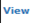
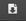

Figure 22: Administration Tab – Proposal Confirmation Searching Result
Steps:-
- The result display all the thesis/proposal that been requested by student whether it has been decided or not.
- The result will show whether the thesis/proposal are new or not by displaying
 at the No. column.
at the No. column.
- To enter remark, click
 that has been displayed.
that has been displayed.
- To read remark, click
 . (Notes: the read remark will be display when the remark already been save in the system)
. (Notes: the read remark will be display when the remark already been save in the system)
- Step 3 and 4 look at 6.2.1.1 Remarks.
- To read or download attachment uploaded by student is by click the

- To upload the attachment to the system is by click the Upload button on the Attachment by faculty column.
- To delete attachment that been upload, click button.
- To edit description of the file/attachment uploaded, click button (Look at 6.2.1.2 Edit Attachment Detail)
- To assign Supervisor/Co-Supervisor Click at Supervisor/Co-Supervisor column. (Look at 6.2.1.3 Assign Supervisor/Co-Supervisor)
- To view the assigned staff, click . (Look at 6.2.1.4 View Assigned Supervisor/Co-Supervisor)
- To change the assigned staff, click
 . (Look at 6.2.1.5 Change Assigned Supervisor/Co-Supervisor)
. (Look at 6.2.1.5 Change Assigned Supervisor/Co-Supervisor)
- To assign Reviewer Click at Reviewer column. (Look at 6.2.1.6 Assign Reviewer)
- To view the assigned reviewer, click . (Look at 6.2.1.7 View Assigned Reviewer)
- To change the assigned Reviewer, click . (Look at 6.2.1.8 Change Assigned Reviewer)
Figure 6.3
Figure 23: Administration Tab – Proposal Confirmation Status
- To verify the confirmation of proposal is tick the proposal and by choose the list menu shown at Figure 6.4 which is Approved, Approved with Changes, Request Changes or Disapprove
- Then click the Submit button to proceed.
- If the proposal status chosen is Request Changes or Disapproved, after Submit button is clicked, the email notification will be sent to the student by the system (Refer Appendix)
- To print the proposal list, click Print Proposal List.
Figure 24: Administration Tab – List of Thesis Proposal for Senate Approval
Steps:-
- To print, click the print logo button
 to print.
to print.
- To save file (PDF) click the download logo button.